星期二, 四月 19, 2022
6:47 上午
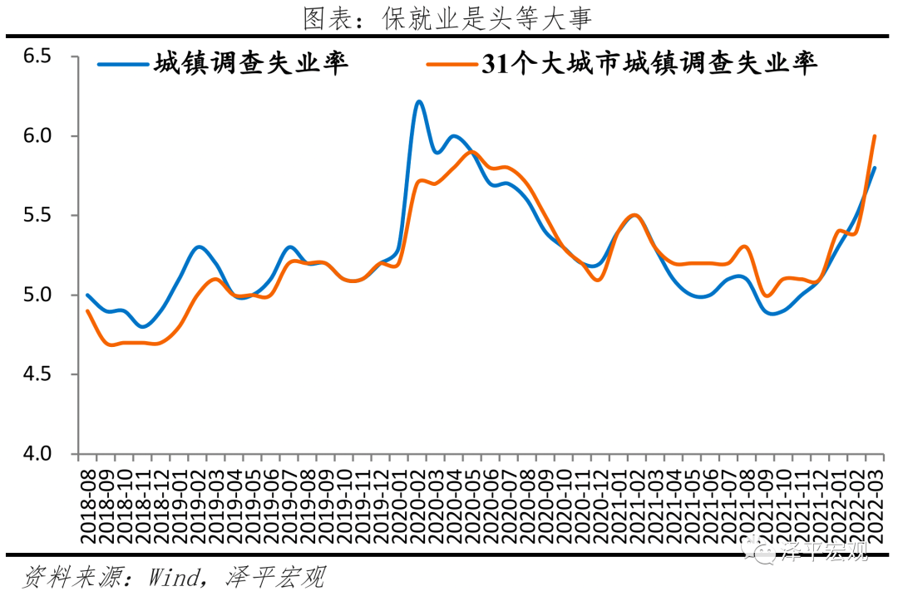
文：任泽平团队
宏观上是数据，微观上是多少家庭的悲欢离合
这是公布数据的日子，是无数个平凡日子的一天。照例，会有很多的点评、解读和分析。
但是，在这个特殊时期，我想写点什么，写在时代的黑板上，写在沉重的大地上，写在所有经济学者、科学家、媒体人等的良心上。以此，来记录一代人的警醒和反思。
做了20年的研究，越来越感到，经济形势不简单是一个个冷冰冰的枯燥数据，宏观经济也不简单是微观的抽象集合。
它们的背后，是一个个有温度的家庭、一个个活生生的人，是我们每个人的身影。
经济数据如果差一些，刚毕业的大学生就可能流离失所，失业的农民工就可能露宿街头，新婚夫妇就可能因断贷而失去家。
经济数据如果好一些，建筑工人就能给家乡的老人孩子邮寄生活费，大厂的码农就能继续编出创新的代码，小酒馆的老板就能喜迎八方来客。
宏观上是数据，微观上是多少家庭的悲欢离合。
宏观上是数据，微观上是无数人的汗水、泪水、奋斗、失败、梦想、希望和光！
这一串串数据的背后是我们每个人的生活和命运，我深信这些数据是有温度的，有情感的。
当下这个形势，建议经济学者、科学家、媒体人等，尽可能实事求是，尽可能建设性，尽可能为稳增长、科学防疫、复产复工和民生建言或实际做点什么。如果不能，有所担心，可以不说，可以沉默，但是请不要说假话，不要说违心话，不要睁眼说瞎话。宏观上是数据，微观上是多少家庭的悲欢离合。
我们困在时代里了，但是困不住一颗向往自由的心，一颗奋斗的心。
我们经历过无数次的战争、危机、瘟疫和萧条，在人类社会的至暗时刻，总有人站出来，建立愿景，经营希望，点燃未来，激发勇气。
相信大家一起努力，定能共渡难关。
1、3-4月经济下行压力加大，宏观政策轰油门对冲
1-2月经济恢复的势头受到地缘冲突、美联储加息、疫情散发等突发因素扰动，3月主要经济数据边际显著下滑，除了基建投资反弹之外，消费、房地产、新订单等纷纷回落。
下滑比较明显的是：3月规模以上工业增加值同比增长5.0%，较1-2月下降2.5个百分点；房地产开发投资同比-2.4%，较1-2月下滑6.1个百分点；房地产销售面积和金额同比分别为-17.7%和-26.2%；社会消费品零售总额同比增-3.5%，剔除价格，实际同比-6.04%；服务业生产指数同比-0.9%；PMI供应配送时间为48.6%，创2020年3月以来新低。
怎么办？
我们提出四大建议，也是今年经济形势的四大关键：
房地产软着陆。 房地产是周期之母，第一大支柱行业，房地产稳，则经济稳。已经有80多个城市加入到房地产调控松绑的行列，预计后续会有越来越的城市因城施策稳房市。有观点质疑中国房地产没有空间了、不能指望了，我们认为仍然具有较大空间，可以在稳增长中发挥重要作用。2021年中国城镇化率64.72%，还有10个百分点以上的空间；人口流入的都市圈城市群还有住房需求缺口，可以通过人地挂钩和因城施策松绑满足市场化商品房需求部分；农民工、新毕业大学生、新市民等对住房刚需明显，我们建议今年应该大力大规模实施保障房租赁房建设，既能拉动经济增长、就业，还能改善民生，是最重要的抓手之一，有百利而无一害，德国、新加坡等都有成功案例。
科学防疫复产复工。 建议提高科学应对和应变能力，相信未来事情往积极的方向变化，将疫情对经济的影响降到最低，恢复产业链供应链，兼顾抗疫和复产复工。同时，向战斗在抗疫一线的同志们致敬。
新老基建和货币政策逆周期加码。 专项债提前投放。房地产市场回暖有助于改善土拍市场和地方财政，进而打通房地产-金融-财政的循环。有观点质疑中国基础设施没有空间了，中国还是一个发展中国家，怎么基建就没空间了呢？何况，美国、英国等发达国家都在积极推动基础设施更新建设。中国城市的地下管网、人口流入地区的轨道交通等空间巨大，以新能源、新一代信息技术、数据中心、人工智能、特高压等为代表的新基建更应该挑起大梁，投资空间巨大，短期有助于稳增长、稳就业，长期有助于培育中国新技术、新产业。有观点质疑中国货币政策没有空间了，将受制于美联储加息和输入性通胀，我们认为中国作为世界第二大经济体应该“以我为主”，以国内稳增长为首要任务目标。无非是担心中美利差倒挂所带来的资本流出压力，在不可能三角中，其实我们办法是有的，以前也这么做过。当前稳增长、稳就业是头等大事，其他的不必纠结，两权相害择其轻。相信随着中国经济的恢复，一定会增加海外投资者的信心，长期的投资者不太会考虑短期的利差，更多的是考虑中国经济的长期发展前景。
市场主体信心恢复。 大规模减税降费，纠偏合成谬误，呵护市场主体的政策将陆续出台，促进市场活力恢复。
近期宏观政策进入轰油门阶段，来对冲经济下行：
最近连续三周国常会部署稳增长措施，“稳定经济的政策早出快出，不出不利于稳定市场预期的措施”“保持经济运行在合理区间，主要是实现就业和物价基本稳定”。
积极的财政政策发力效果显现，一季度基础设施投资增长8.5%。专项债提前发行，基建项目加快落地。“去年提前下达的额度5月底前发行完毕，今年下达的额度9月底前发行完毕。”
货币政策四部曲：不急转弯-慢转弯-转弯-轰油门。央行宣布425全面降准0.25%+定向降准0.25%的组合，释放基础货币5300亿。
4月18日，刘鹤副总理出席全国保障物流畅通促进产业链供应链稳定电视电话会议并讲话部署十项重要举措， 要求努力实现“民生要托底、货运要畅通、产业要循环”，要着力稳定产业链供应链，通过2000亿元科技创新再贷款和用于交通物流领域的1000亿元再贷款撬动1万亿元资金，建立汽车、集成电路、消费电子、装备制造、农用物资、食品、医药等重点产业和外贸企业白名单。
我们维持此前判断，2022年关键词：双周期、稳增长、宽货币、新基建、软着陆、提估值。
未来关注五大结构性机会：受益于困境反转的、受益于稳增长的、受益于被误伤的、受益于政策友好的、受益于提估值的。
3月17日发布《从今天起开始乐观》以来，市场反弹筑底。4月6日发布《新一轮结构性牛市猜想》，推荐以困境反转、稳增长等为主的五大结构性机会，近期明显跑赢大势，市场开始关注困境反转。我们维持上述观点和判断。在至暗时刻，低迷之际，我们愿意传递理性、专业和信心。
2 3月宏观形势主要呈八大特征：
第一，房地产市场下滑加大，销售、资金来源、投资、土地购置、新开工、施工、竣工等数据均大幅负增长。
3月商品房销售面积和销售额同比分别为-17.7%和-26.2%，分别较1-2月下滑8.1和6.9个百分点。3月房地产开发资金来源同比-23.0%，较1-2月下滑5.3个百分点。房地产投资同比增长-2.4%，较1-2月下滑6.1个百分点；土地购置面积和土地成交价款同比分别为-50.0%和-0.9%，新开工、施工和竣工面积同比分别为-22.2%、-21.5%和-15.5%，分别较1-2月下滑10.1、23.3和5.7个百分点。
房地产稳则经济稳。房地产“政策底”已现，“市场底”还需观察房地产销售等先行指标。政策端，短期因城施策适当调整，促进软着陆；长期《政府工作报告》提出房地产新模式，我们认为新模式包括长租房、保障房、城市群战略、人地挂钩等。未来，房地产市场回归实体经济属性，从大开发时代步入存量时代、需求主要在人口流入的都市圈城市群。
第二，基建发力明显。
2022年3月基础设施建设投资同比增长11.8%，较1-2月上升3.2个百分点；基础设施建设投资（不含水电燃气）累计同比增长8.5%。 电热燃气和水利环境投资增速加快，3月电热燃气、交运仓储、水利环境设施投资累计同比8.9%和9.4%，分别较1-2月上升12.7、下滑1.6和上升3.4个百分点。
去年四季度以来稳增长政策，新基建领域的发力方向主要包括： 水利工程、综合立体交通网、管道更新改造、防洪排涝设施、重要能源基地、节能降碳技术、5G、数据中心、产业数字化转型、工业互联网、集成电路、人工智能等数字产业等项目建设。
第三，制造业投资尤其高端制造韧性高增。
3月制造业投资同比增长11.9%，较1-2月下滑9.0个百分点。 “十四五”新型基建、绿色经济、数字经济转型升级的相关项目持续推进，制造业投资将保持韧性。一季度新基建相关行业电气机械（包含光伏、新能源汽车电池等）和计算机等电子设备制造业（包括5G等）同比分别高达42.1%和27.8%，合计占制造业投资的20.4%。
第四，消费负增长，就业形势严峻。
3月社会消费品零售总额同比-3.5%，扣除价格因素，实际同比-6.04%。除必需消费品仍保持强劲以外，可选消费品、房地产相关产业链、汽车等行业均大幅回落。餐饮收入同比-16.4%。
3月消费大幅下滑，一方面是疫情限制消费场景，另一方面反映居民就业收入存在问题。 3月城镇新增就业人数同比-18.1%，1-2月为10.1%；全国城镇调查失业率为5.8%，创2020年6月以来新高。16-24岁、25-59岁人口调查失业率分别为16.0%、5.2%；保就业、促消费是当前头等大事。
第五，出口继续保持高增，但价格贡献大于实际物量。
3月中国出口额（以美元计，下同）2760.8亿美元，同比增14.7%，较1-2月回落0.9个百分点，两年复合增速22.3%。 当前出口的高增速更多是由价格支撑；新出口订单自2021年5月进入收缩区间，同期，出口数量指数也出现下滑趋势，价格指数上行。外需出现回落趋势，但仍然维持高景气，3月美国Markit制造业PMI为58.5%，欧元区制造业PMI为57.0%，德国制造业PMI为57.6%。
第六，输入性通胀压力上升。
3月CPI同比上涨1.5%，涨幅比上月扩大0.6个百分点；环比上涨0.6%，与上月持平。PPI同比上涨8.3%，涨幅比上月回落0.5个百分点；环比由上月涨0.5%转为上涨1.1%。需持续关注地缘因素导致能源品价格上涨，以及猪周期拐点对CPI拖累减弱。
第七，3月金融数据大超预期，主要依靠政府债券、表外融资、短期冲量，居民和企业中长期信贷需求仍然疲弱。
3月存量社融、M2同比增速分别为10.6%、9.7%，较上月分别增长0.4、0.5个百分点。主因是主因政府债发力，表外融资回暖；M2与M1剪刀差扩大，反映实体经济活跃度不足。
第八，高通胀背景下，美联储货币政策前置。
3月美联储议息会议首次宣布加息25bp，截至4月18日，CME市场观察5月加息50bp概率在88.8%。当前美国通胀持续走高、经济基本面暂时仍有韧性，支撑其短期加息。
1）美国通胀持续走高。3月美国CPI同比录得8.5%，持续创下40年新高。其中，汽油录得同比48%，机票录得同比23%，可以看出主要上涨项仍为能源相关产品。美国通胀主要有三个原因：第一是供应链堵塞。目前美国港口进港船只的平均等待时间仍较长，其中西海岸约为5天，东海岸约为10天。第二是俄乌战争导致的石油紧缩。虽然美国身为产油大国，但美国石油供应商在面对短期风险事件导致的石油供给下降时，不会贸然扩产。第三是疫情期间的救济政策所导致的流动性泛滥影响。
2）美国就业仍然在持续修复。3月就业数据显示新增非农就业46.7万人，其中服务业新增就业约44万人，制造业新增约1.3万人。同时，美国失业率也降至新低，劳动参与率进一步修复。3月失业率仅为3.6%，创下疫后新低，而劳动参与率也创下疫后新高录得62.4%。
3）美国经济进入滞胀阶段、但目前仍有韧性。在经历强势复苏后，美国经济基本恢复至疫情前水平。供给端，3月美国工业产能利用率和工业总体产出指数均超过疫情前水平，分别为疫情前的102.3%和102.9%（2019年12月=100）。需求端，截至2月，美国实际个人消费支出恢复至疫情前105%的水平，虽然相较1月105.4%有所下滑，但整体受服务业消费支撑仍有韧性；其中，服务业恢复至疫情前99.7%的水平，商品消费恢复至疫情前116%的水平。
3 工业生产回落
3月份，规模以上工业增加值同比实际增长5.0%，较1-2月下降2.5个百分点。一季度，规模以上工业增加值同比增长6.5%。分三大门类看， 3月份，采矿业增加值同比增长12.2%；制造业增长4.4%；电力、热力、燃气及水生产和供应业增长4.6%。分行业看，3月份，41个大类行业中有37个行业增加值保持同比增长。本月高技术行业继续优于平均，装备制造业表现分化，汽车行业和黑色冶炼造成拖累。
1）消费行业中， 农副食品加工业同比6.1%，较上月下降0.4个百分点；食品制造业同比3.8%，较上月下降3.6个百分点。
2）高技术行业中， 医药制造业同比10.1%，较上月下降2.8个百分点；计算机、通信和其他电子设备制造业同比12.5%，较上月下降0.2个百分点。
3）装备制造业中， 金属制品业同比2.1%，较上月下降4.7个百分点；电气机械和器材制造业同比10.6%，较上月下降3.0个百分点；专用设备制造业同比7.6%，较上月下降1.2个百分点；铁路、船舶、航空航天和其他运输设备制造业同比1.1%，较上月下降3.1个百分点。
4）汽车制造业同比-1.0%，较上月下降8.2个百分点，主因疫情扰动。3月，乘用车产销分别完成188.1万辆和186.4万辆，同比分别下降0.1%和0.6%；其中，新能源汽车产量同比增长121.4%；1-3月，新能源汽车产销分别完成53.3万辆和51.5万辆，同比分别增长3.2倍和2.8倍。
5）纺织业同比0.7%，较上月下降4.2个百分点；黑色金属冶炼和压延加工业同比-1.6%，较上月回升1.3个百分点。
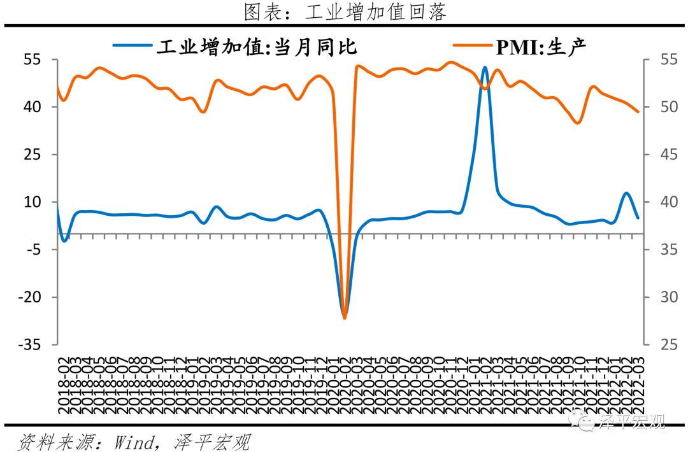
4 固定资产投资增速下滑，高技术产业投资高增
3月固定资产投资（不含农户）当月同比增长6.7%，较1-2月下滑5.5个百分点；一季度固定资产投资（不含农户）累计同比增长9.3%。 分投资主体看，一季度民间固定资产投资和国有控股企业固定资产投资累计同比分别为8.4%和11.7%，较1-2月分别下滑3.0和2.4个百分点。
高技术制造业和社会领域投资增长较快。 一季度高技术产业投资增长27.0%，其中高技术制造业和高技术服务业投资分别增长32.7%、14.5%。高技术制造业中，电子及通信设备制造业、医疗仪器设备及仪器仪表制造业投资分别增长37.5%、35.4%；高技术服务业中，信息服务业、科技成果转化服务业投资分别增长21.3%、19.0%。社会领域投资增长16.2%，其中卫生、教育投资分别增长23.8%、17.2%。
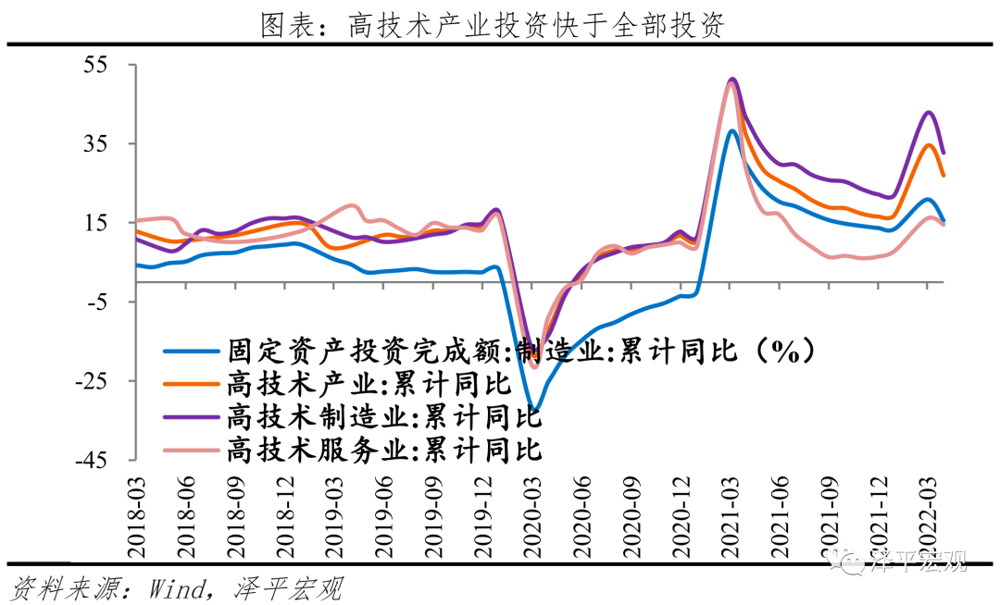
5 房地产销售、资金回笼和投资同比环比下滑
房企销售和资金回笼速度持续负增长，3月商品房销售面积和销售额同比分别为-17.7%和-26.2%，分别较1-2月下滑8.1和6.9个百分点。3月房地产开发资金来源同比-23.0%，较1-2月下滑5.3个百分点。 在大部分房企仍处于经营困境的背景下，居民对房市信心不足、观望情绪较浓，叠加疫情反复对就业和居民收入的影响，尽管1月以来多地先后出台下调房贷利率、下调首付比例、放松公积金贷款条件等政策，房地产市场整体成交仍偏冷，房企资金压力持续加大。房企资金回笼速度整体放慢， 3月房企从国内贷款、定金及预收款、个人按揭贷款到位的开发资金同比分别为-29.7%、-37.5%和-22.1%，分别较1-2月下滑8.7、9.4、10.4和5.2个百分点；3月房企自筹资金回款同比-2.3%，较1-2月降幅收窄3.9个百分点，或与央行支持房企并购融资工具有关。
3月房地产投资同比增长-2.4%，较1-2月下滑6.1个百分点；一季度房地产投资累计同比增长0.7%。受限于销售和资金到位速度放缓，土地购置和建安投资整体均弱。土地成交方面， 受房企销售回款不佳和资金压力影响，房企拿地意愿较弱，近期拿地的房企普遍是资金流充裕的老牌央企、国企以及地方国资，3月土地购置面积和土地成交价款同比分别为-50.0%和-0.9%，分别较1-2月回升1.3和25.8个百分点。土地成交均价上涨主因3月广州、深圳等城市开启今年首批集中供地和上海多宗较高价位的商住地块的成交。施工方面，疫情阻碍施工进程，新开工、施工、竣工速度均边际放慢。 3月新开工、施工和竣工面积同比分别为-22.2%、-21.5%和-15.5%，分别较1-2月下滑10.1、23.3和5.7个百分点。在疫情反复、“动态清零”等抗疫政策之下，二季度房企施工预计将持续受阻，建安投资将继续走弱，预计各地房地产政策的松绑对房地产市场提振有限，房地产软着陆仍是影响房地产市场筑底回升的决定性因素。
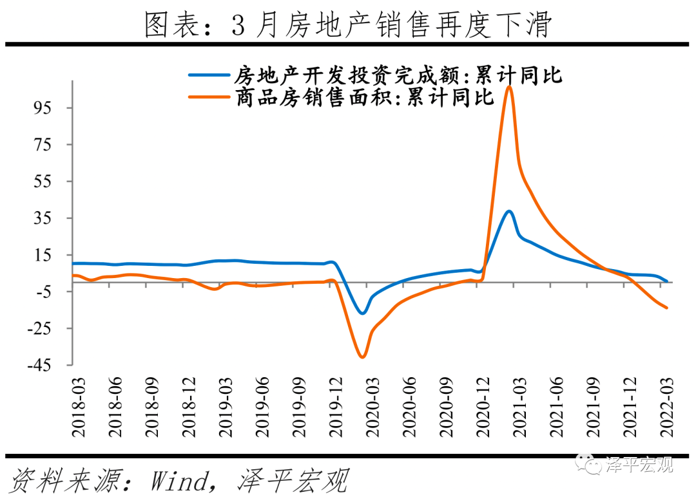
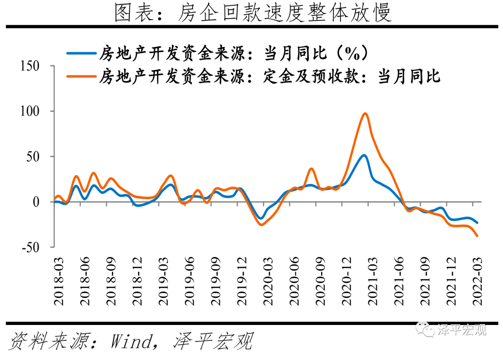
6 基建反弹，稳增长密集加码
2022年3月基础设施建设投资同比增长11.8%，较1-2月上升3.2个百分点；一季度基础设施建设投资累计同比增长10.5%，基础设施建设投资（不含水电燃气）累计同比增长8.5%。 电热燃气和水利环境投资增速加快，3月电热燃气、交运仓储、水利环境设施投资累计同比8.9%和9.4%，分别较1-2月上升12.7、下滑1.6和上升3.4个百分点。交运仓储中，3月铁路和道路投资同比增速分别为1.7%和0.2%，分别较1-2月上升9.7和下滑8.0个百分点。水利环境中，3月公共设施管理投资表现较好，同比增速为10.8%，较1-2月上升6.5个百分点。
稳增长的关键词是新基建，2021年底以来，在中央多次强调加快推进“十四五”规划项目的投资和落地、多省集中开工多批重大项目的推动下，结合募集资金到基建投资的3-6个月时滞，基建托底经济的效果已开始显现。
资金端， 专项债2021年结余资金和2022年提前批额度为基建提前发力提供保障。1月10日国常会强调要尽快将去年四季度发行的1.2万亿元地方政府专项债券资金落到具体项目。两会强调要用好政府投资资金、资金跟着项目走,合理扩大使用范围。截至3月末，财政部提前下达的1.46万亿2022年新增专项债务限额已发行1.25万亿，占提前下达额度的86%；3月30日财政部又向各地下达了剩余的新增专项债券限额。
项目端， 中央接连发声要加快落实基建项目，项目审批速度加快，部分省份一批重大项目集中开工。随着中央“十四五”规划《纲要》出台以及提出要加快“十四五”规划重大工程、区域重大战略规划及年度工作安排明确的重大项目实施，多省关于水利发展、交通运输等基建细分行业的十四五规划陆续出台，带动基建项目储备增加。2022年2月以来贵州省、山东省、四川省等多省春季重大工程集中开工。截至4月上旬，24省市已公布的2022年重大项目计划投资额累计达12.8万亿。
在资金、项目两端双重保障下，基建得以提前发力，但在中央对地方隐性债务监管仍严、土地财政收入减少的影响下，不可忽视地方财政仍承受较大压力，预计基建投资全年将发挥托底投资的作用。
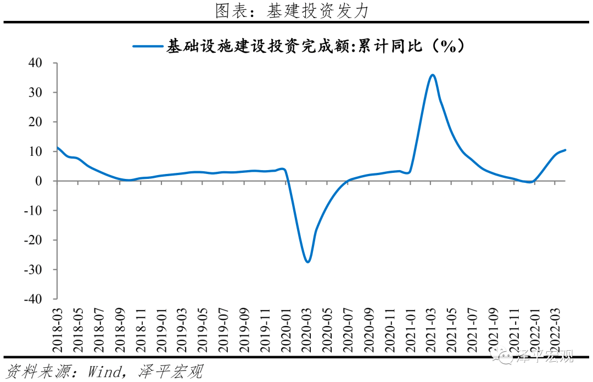
7 制造业投资韧性强
3月制造业投资同比增长11.9%，较1-2月下滑9.0个百分点；一季度制造业投资累计同比增长15.6%。3月制造业投资较1-2月有所放缓。1）装备制造业投资仍保持较快增速， 3月金属制品、通用设备、专用设备、电气机械和计算机等电子设备制造业投资同比分别增长16.9%、23.0%、23.9%、31.3%和22.2%，较1-2月下滑18.4、5.3、6.3、25.1和12.9个百分点。随着汽车零部件公司逐渐恢复生产，3月汽车制造同比13.2%，较1-2月上升1.9个百分点**。2）必需消费品制造业投资韧性较强，**3月农副食品加工和食品制造投资同比分别增长22.7%和22.4%，分别较1-2月下滑6.8和4.3个百分点，但仍维持较高增速。
预计随着“十四五”新型基建、绿色经济、数字经济转型升级的相关项目的推进，制造业投资仍将有所支撑。 12月中央经济工作会议强调“要提升制造业核心竞争力，启动一批产业基础再造工程项目，激发涌现一大批‘专精特新’企业”，并作出“加快数字化改造，促进传统产业升级”等部署。随着产业结构持续升级，一季度新基建相关行业电气机械（包含光伏、新能源汽车电池等）和计算机等电子设备制造业（包括5G等）合计占制造业投资的20.4%，较去年全年的16.5%占比有所上升。 预计随着“十四五”新型基建项目的加快推进、“双碳”目标下传统制造业碳减排所需的设备和技术改造，高技术产业投资将持续高增，带动制造业投资整体。
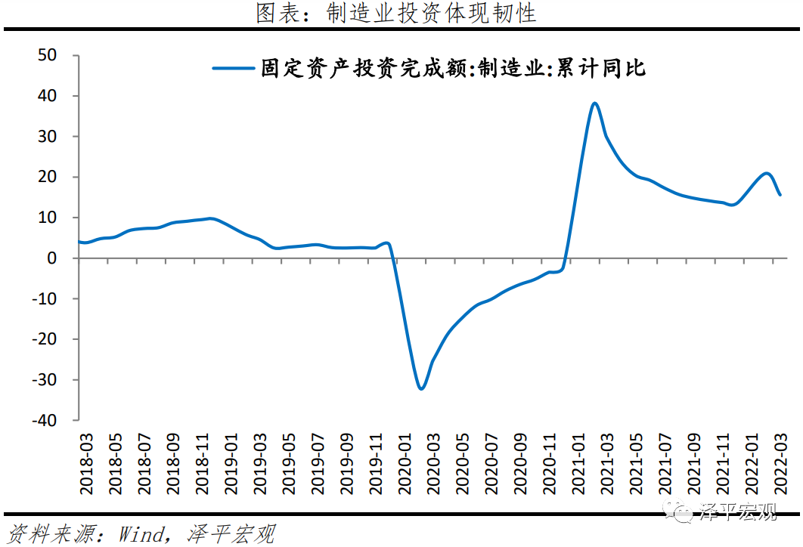
8 消费回落，就业严峻
3月社会消费品零售总额同比-3.5%，扣除价格因素，社会消费品零售总额同比实际-6.04%。 其中，除汽车以外的消费品零售额同比-3.0%。一季度，社会消费品零售总额同比增长3.3% ，实际同比增长1.3%。按消费类型分， 3月商品零售同比-2.1%；餐饮收入同比-16.4%。
分品类看，必需消费品类保持强劲，石油维持高增，可选消费品类和房地产产业链表现不佳。 1）必需消费品中，粮油、食品类同比12.5%，较上月上升4.6个百分点；饮料类同比12.6%，较上月上升1.2个百分点；烟酒类同比7.2%，较上月下降6.4个百分点。2）可选消费品中，化妆品类同比-6.3%，较上月下降13.3个百分点；金银珠宝类同比-17.9%，较上月下降37.4个百分点。3）石油及制品类同比10.5%，较上月下降15.1百分点。4）汽车类同比-7.5%，较上月下降11.4个百分点。5）房地产产业链表现不佳。建筑及装潢材料类同比0.4%,较上月下降5.8个百分点；家具类同比-8.8%，较上月下降2.8个百分点；家用电器和音像器材类同比-4.3%，较上月下降17.0个百分点。
消费是经济的慢变量，受居民收入和就业影响，当前就业形势较为严峻，存在结构性问题。 一季度，全国居民人均可支配收入10345元，比上年名义增长6.3%，扣除价格因素，实际增长5.1%。分城乡看，城镇居民人均可支配收入13832元，增长5.4%，扣除价格因素，实际增长4.2%；农村居民人均可支配收入5778元，增长7.0%，扣除价格因素，实际增长6.3%。一季度，全国城镇新增就业285万人，全国城镇调查失业率平均值为5.5%。3月份，全国城镇调查失业率为5.8%，比上月上升0.3个百分点。16-24岁、25-59岁人口调查失业率分别为16.0%、5.2%。
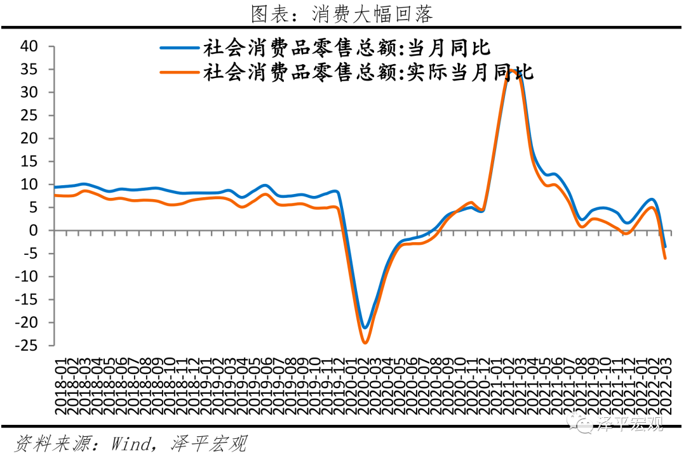
9 出口高位回落，扣除价格因素后实际增速下滑
3月中国出口额（以美元计，下同）2760.8亿美元，同比增14.7%，较1-2月回落0.9个百分点，两年复合增速22.3%。 当前出口的高增速更多是由价格支撑；新出口订单自2021年5月进入收缩区间，同期，出口数量指数也出现下滑趋势，价格指数上行。外需出现回落趋势，但仍然维持高景气，3月美国Markit制造业PMI为58.5%，欧元区制造业PMI为57.0%，德国制造业PMI为57.6%。
分地区看，美国仍是最大出口贸易伙伴。 其中，3月对美国、欧盟、东盟、日本、韩国出口额分别同比22.4%、21.4%、10.4%、9.7%和14.4%。分产品看，海外供应链改善，防疫限制性措施放开。 3月机电、高新技术产品同比11.2%、9.6%，涨幅较上月变动6.7、-1.7个百分点；劳动密集型产品同比16.4%，环比29.5%，其中箱包、玩具等同比32.6%、13.8 %。此外，受疫情影响，欧日韩疫情反复带动防疫物资出口，纺织纱线织物两年复合增速表现不弱。口罩在内的纺织纱线织物、防护服手套在内的塑料制品和以及医疗仪器及器械出口同比分别为22.2%、20.8%和4.9%，两年复合增速15.1%、21.6%和20.7%。
3月中国进口金额（以美元计）2287.0亿美元，同比-0.1%，自2020年8月以来首次转负，两年复合增速17.9%。 分产品看，大宗商品进口出现分化，大豆、原油量升价跌，铁矿砂量价齐跌。其中，大豆、铁矿砂、原油同比1.4、-34.0%、36.0%，进口量同比-18.2%、-14.5%、-14.0%。分地区看，3月对东盟进口同比2.7%，涨幅下滑8.2个百分点；欧盟、日本、韩国和美国进口同比-11.6%、-9.8%、8.8%和-11.9%，分别较上月变动-12.1、-16.3、-3.9和-10.8个百分点；此外，对印度进口同比-34.9%，降幅较上月扩大16.3个百分点。**高技术产品、机电产品进口保持高增长。**3月进口高新技术、机电产品同比-2.5%、11.4%。其中，集成电路、汽车、飞机进口额同比6.9%、0.93%和24.1%。
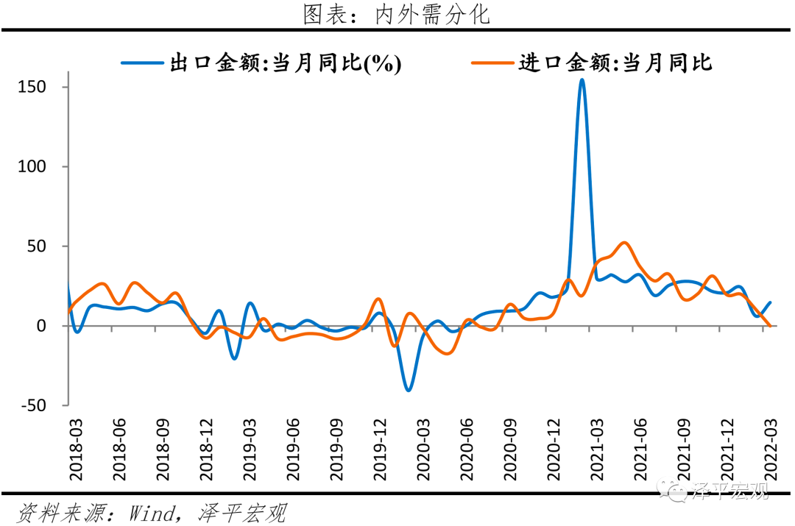
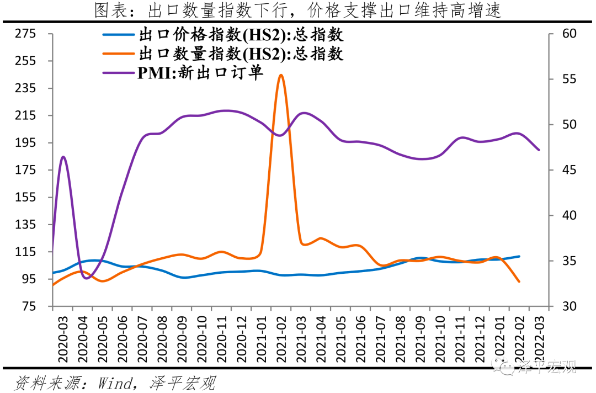
10 社融大幅回升，但企业融资和居民贷款需求仍弱
3月存量社融规模325.64万亿元，同比增长10.6%，较上月提高0.4个百分点。 新增社会融资规模4.65万亿元，较上年同期大幅增加1.27万亿元。
从社融结构来看，政府债券、表外融资发力明显，信贷修复。 3月社融口径新增人民币贷款32328元，同比多增4817亿元，主因票据融资、企业短贷支撑；表外融资增加133亿元，同比多增4262亿元。其中，新增未贴现票据增加286亿元，同比大幅多增2582亿元；新增信托贷款减少259亿元，同比大幅少减1532亿元；委托贷款增加106亿元，同比多增148亿元；政府债券净融资7052亿元，同比多增3921亿元。一季度以来，共发行新增专项债规模1.3万亿元，约占1.46万亿元提前批额度的89%，高于2019年和2020年同期的82%和83%；企业债券净融资3894亿元，同比多增87亿元，基建发力带动企业相关配套融资。新增股票融资985亿元，同比多增175亿元。
3月金融机构口径信贷余额同比增速为11.4%，与前值持平。 3月金融机构口径新增人民币贷款3.13万亿元，同比多增4000亿元。贷款增速同比继5个月连续下降后止跌。新增企业贷款2.48万亿元，同比多增8800亿元。短期贷款、中长期贷款、票据融资同比分别多增4341亿元、148亿元、4712亿元；新增居民贷款7539亿元，同比少增3940亿元。其中，短期贷款新增3848亿元，同比少增1394亿元。
M2增速9.7%，较上月上升0.5个百分点，M1增速4.7%，与上月持平。M2与M1剪刀差扩大，反映实体经济活跃度不足。 1）企业存款增加2.65万亿元，同比多增9221亿元。居民存款增加2.7万亿元，同比多增7623亿元。2）新增财政存款减少8425亿元，同比多减3571亿元。3月是公共预算支出大月，财政存款加速向居民、企业存款转化。3）非银金融机构存款减少6320亿元，同比多减3040亿元。3月资本市场经历大幅波动，股债双杀，基金、银行理财等产品遭遇赎回潮，非银存款向居民、企业存款转化。
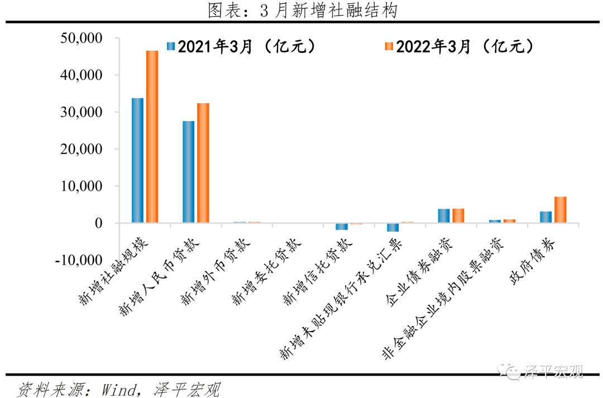
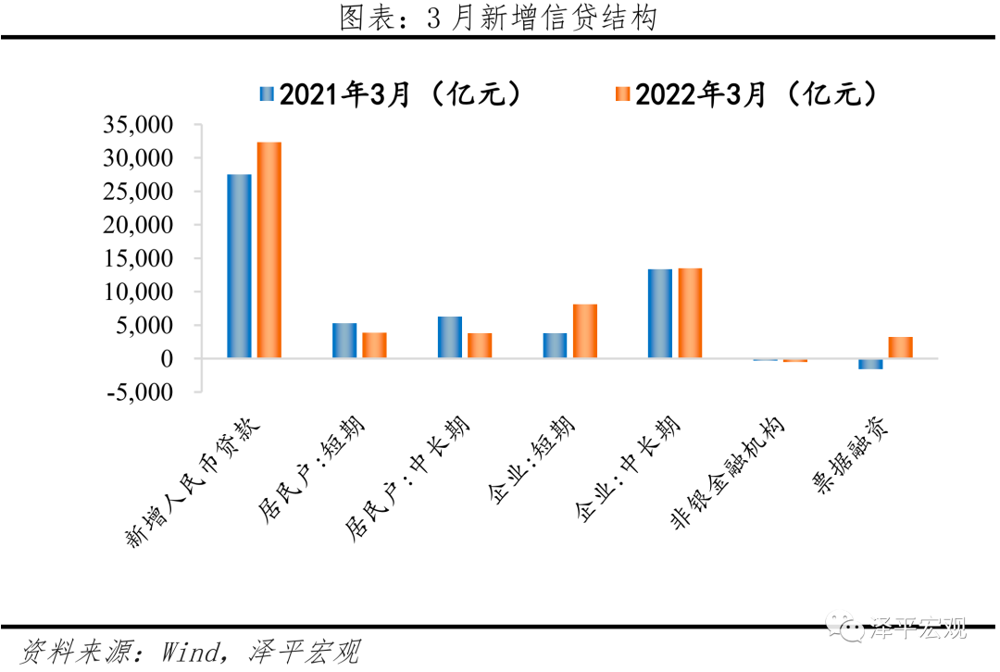
11 输入性通胀显现
CPI环比持平，同比涨幅扩大。3月CPI同比上涨1.5%，涨幅比上月扩大0.6个百分点；环比上涨0.6%，与上月持平。3月扣除食品和能源价格的核心CPI同比上涨1.1%，保持稳定。
非食品同比涨2.2%，涨幅比上月扩大0.1个百分点，影响CPI上涨约1.77个百分点。 本月非食品项价格继续增长，主要是受到国际原油价格、通胀在消费部门传导影响：一是受国际能源价格上涨影响，二是通胀在消费部门传导。食品项同比下降1.5%，降幅比上月收窄2.4个百分点，影响CPI下降约0.28个百分点。本月食品项价格变动结构主要是受以下两方面影响：一是猪价同比降幅收窄。 3月猪肉价格同比下降41.4%，降幅比上月收窄1.1个百分点，总体影响CPI下降约0.83个百分点。较2月影响CPI下降约0.95个百分点有所收窄。二是疫情影响生产运输，部分食品价格边际扰动。
PPI同比高位震荡，环比上涨。 本月PPI同比上涨8.3%，涨幅比上月继续回落0.5个百分点；环比上涨1.1%，涨幅扩大0.6个百分点。其中，出厂价格同比上涨8.3%，环比上涨1.1%；购进价格同比上涨10.7%，环比上涨1.3%。购进价格看，多类原料价格边际上行。 3月燃料动力类、有色金属材料电线类、化工原料类环比涨幅分别达3.9%、2.1%、1.6%。出厂价格看，能源和金属类，涨幅有所扩大。 石油和天然气开采业同比上涨47.4%，扩大5.5个百分点；石油煤炭及其他燃料加工业上涨32.8%，环比上涨7.9%；有色金属冶炼和压延加工业同比上涨18.3%，环比上涨2.7%。
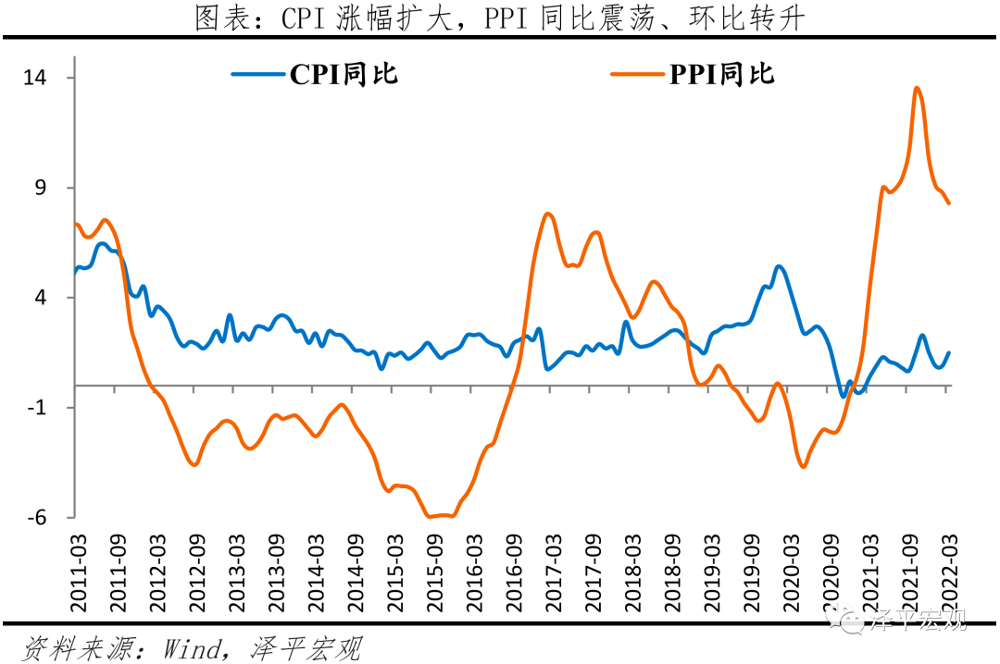
12 PMI生产和订单明显回落
3月制造业PMI为49.5%，较上月下滑0.7个百分点，较上年同期下滑2.4个百分点。生产、订单、就业及进出口均降至收缩区间，经济动能（-0.1%）自疫情以来出现负值。 1）生产指数和新订单指数分别为49.5%和48.8%，分别较上月变动-0.9和-1.9个百分点。2）新出口订单指数为47.2%，大幅低于上月1.8个百分点，仍连续十一个月处于收缩区间。主因欧美经济扩张趋缓和地缘事件。3）主要原材料购进价格指数和出厂价格指数分别为66.1%和56.7%，分别比上月上升6.1和2.6个百分点。从行业情况看，石油煤炭及其他燃料加工、黑色金属冶炼及压延加工、有色金属冶炼及压延加工等上游行业主要原材料购进价格指数和出厂价格指数均超过70.0%。全球面临滞胀风险，中国面临输入性通胀压力。美欧等经济体通胀屡创历史新高，主因美欧货币超发滞后效应、供求缺口、地缘动荡等因素叠加。俄乌冲突对商品价格影响主要集中在13种商品上。具体来看，3月各商品价格环比增长情况 ：布油19.7%、IPE天然气59.3%、LME铜3.5%、LME铝9.3%、LME镍60.6%、铁矿石10.3%、螺纹钢2.6%、COBT玉米15%、COBT小麦37.5%、IPE鹿特丹煤炭85.3%。
3月大、中、小型企业PMI分别为51.3%、48.5%和46.6%，较上月变动-0.5、-2.9和1.5个百分点。 企业生产经营预期仍在荣枯线上，但中型、小型企业主要经营指标景气收缩。1）中型企业生产指数47.6%，环比下滑4.8个百分点。 新订单指数大幅下滑5.3个百分点至47.8%，新出口订单下滑2.0个百分点至45.8%。2）小型企业低于荣枯线，生产、新订单指数为45.0和44.0%，较上月回升3.9和2.3个百分点； 新出口订单40.6%，略低于上月0.4个百分点，主因国际地缘问题，部分订单减少。
3月非制造业商务活动指数为48.4%，低于上月3.2个百分点，较上年同期下滑7.9个百分点，与近年均值差-6.1个百分点。受疫情影响明显。 服务业商务活动指数为46.7%，较上月明显下滑3.8个百分点，主因疫情蔓延带来全国业务活动不足。
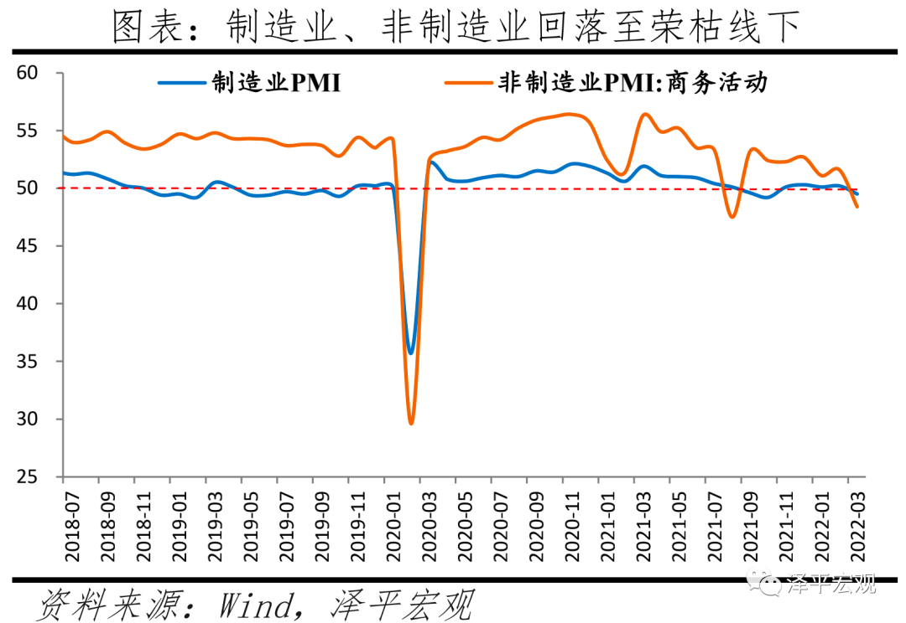
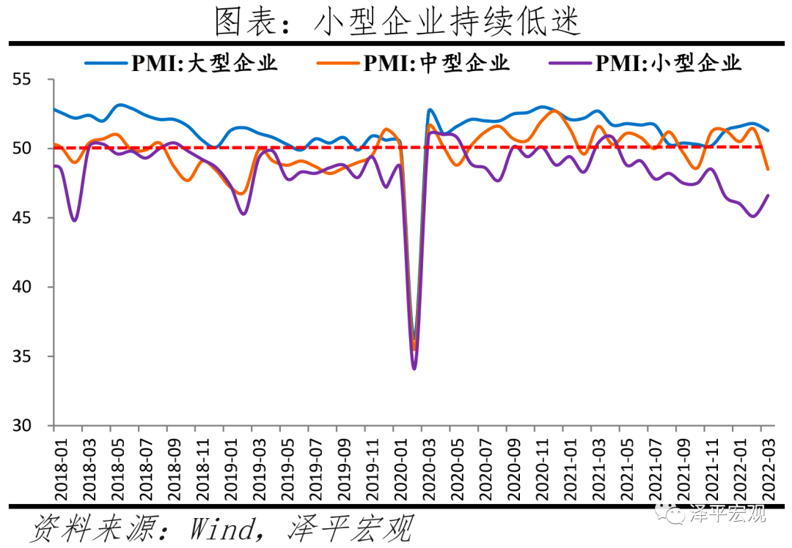
...